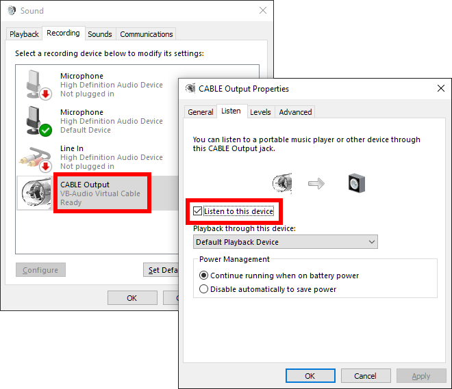
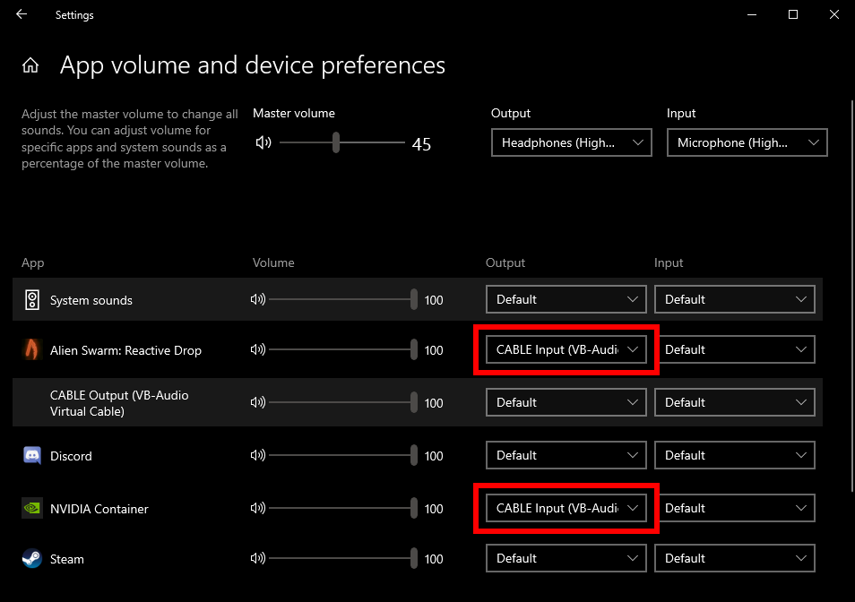

ShadowPlay is a feature of modern NVIDIA graphics cards that allows for recording games and other applications at native resolution with only a minimal performance hit. It also includes some genuinely useful features like instant replay.
Unfortunately, the audio options for recording are pretty limited. By default, all audio is recorded to a single mixed track. This includes the game audio, but also your mic, notification sounds, any music you're playing in the background, people talking on Steam, Discord, etc.
After some experimentation I eventually found a way to pick which applications to record the audio from, but it's not intuitive at all so I'm documenting it here.
General idea
- Create a virtual audio device
- Play the audio from this device to the default audio device so you can hear it
- Force the applications you want to record to only play audio to this device
- Tell ShadowPlay to only record audio from this device
Step by step guide
-
Install GeForce Experience and enable the in-game overlay and hotkey in the settings. Press the hotkey to bring up the overlay. In the overlay on the right you will see a microphone icon. Click it to bring up a dropdown menu then click on "Settings". In the menu that appears, configure your microphone input and select the "Separate both tracks" option. This will cause your microphone audio to be recorded, but in a separate track from the game audio, making it easy to strip out or mix in later. You can also just use the single track mode and mute the mic instead if you never want to record yourself.
-
Install Virtual Audio Cable. This will install two virtual sound devices on your system: "CABLE Input" (an output device) and "CABLE Output" (an input device). When sounds are played out the "CABLE Input" device, they can be recorded by listening to the "CABLE Output" device.
-
Open the "Sounds" control panel (Open the Control Panel, click "Hardware and Sound", then "Sound"), go to the "Recording" tab and find the "CABLE Output" device. Double click it to open its properties. Go to the "Listen" tab, check the "Listen to this device" option, and select the "Default Playback Device" as the target. This will allow you to hear any audio that is played by this device. 
-
Launch all applications and games you want to record.
-
Open the Sound mixer (Start menu, type "Sound mixer options"). You should see your open programs mapped to audio inputs and outputs. If you don't see a "NVIDIA Container" program listed then activate the GeForce overlay and toggle the "Instant Replay" setting on and off to make it appear. Change the "Output" of the "NVIDIA Container" application to the "CABLE Input" device. This tells ShadowPlay to only record the audio sent to this output.
-
Change the "Output" of each of the applications you want to record to "CABLE Input". I'm recording the audio from a game called Alien Swarm: Reactive Drop in the example below. 
-
Start recording (or enable the instant replay recording mode)
The resulting video files will only include audio from the applications you selected in step 6. If you opted to record your microphone in step 1, it will be in a separate audio track that you can either remove or manually mix into the main audio later.
Notes
- Tested on Windows 10 21H1 running GeForce Experience v3.22.0.32
- Once this is all set up, the only thing you'll have to mess with on an ongoing basis is the mixer settings (steps 5 and 6)